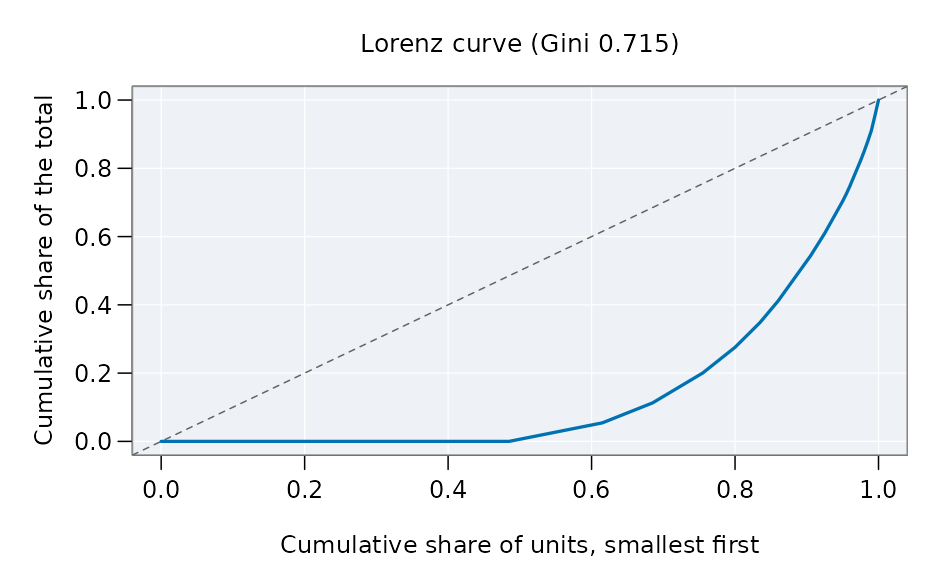
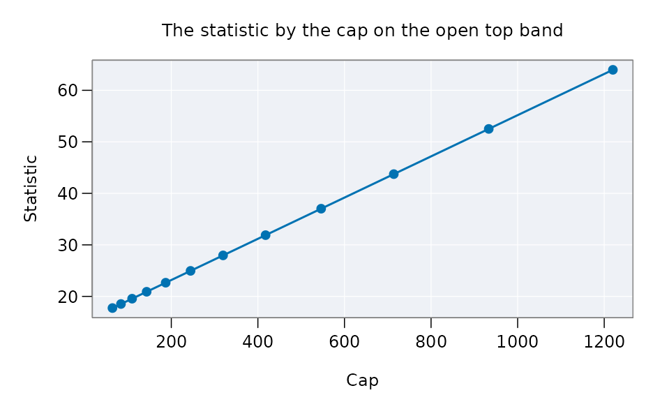

Counts, rates, concentration and published tables
Source:vignettes/counts-rates-and-tables.Rmd
counts-rates-and-tables.RmdCount regression, standardised rates, cross-tables, concentration of crime, the dark figure, and tables published in bands.
Each section is one help page: what the function is for, the example
of its help page as it runs, and the plot of its result where the
package draws one. ?name gives the arguments and the value
in full.
Counts, rates and tables
Count regression: rate ratios between groups
cntreg(): Fits a log-linear model of a count on a group,
with adjustment columns, an exposure and clusters, by Poisson and
negative binomial maximum likelihood, and reports the incidence rate
ratio (IRR) of each group against the reference with its interval. The
same model serves counts of people, placements, days or deaths in the
cells of a published table and counts per person or per area.
# placements by group in eight institutions over three years
d <- data.frame(
n = c(12, 30, 8, 25, 14, 41, 9, 22, 11, 35, 7, 28),
female = rep(c("no", "yes"), 6),
year = factor(rep(c(2021, 2022, 2023), each = 4)),
inst = rep(c("A", "B", "C", "D"), each = 2, length.out = 12)
)
cntreg(d$n, d$female, adj = d["year"], clus = d$inst)
#> cntreg: 12 counts, 4 clusters; reference no
#> rate ratios (95% intervals):
#> fit term irr lo hi p sep
#> pois yes 2.967213 2.219882 3.966137 2.036053e-13 FALSE
#> nb yes 2.967220 2.211509 3.981170 4.108785e-13 FALSE
#> poiscl yes 2.967213 2.610266 3.372972 4.107025e-62 FALSE
#> nbcl yes 2.967220 2.610217 3.373050 4.296535e-62 FALSE
#> negative binomial theta 581.5672; AIC Poisson 74.68582, negative binomial 76.67518
# rates: a count per person-days of exposure
cntreg(c(5, 12), c("a", "b"), expo = c(1000, 1500))
#> Warning: cntreg: the negative binomial fit failed (theta has no finite estimate); its
#> rows are NA.
#> cntreg: 2 counts; reference a
#> rate ratios (95% intervals):
#> fit term irr lo hi p sep
#> pois b 1.6 0.563681 4.541576 0.3772454 FALSE
#> nb b NA NA NA NA FALSERates and proportions by group: ratios and differences
grprr(): The rate (events over exposure) or the
proportion (events over trials) of each group, and its ratio to and
difference from a reference group, with approximate and exact intervals.
Rows that share a group are pooled: give one row per group, or one per
case (0/1 outcomes with n = 1, the default for
proportions), or anything between.
# use-of-force incidents per 1,000 contacts by perceived race
grprr(c(white = 120, black = 95, other = 30),
c(white = 60000, black = 21000, other = 15000), per = 1000)
#> grprr: rates per 1000, 95% intervals
#> group x n rate lo hi elo ehi rep
#> white 120 60000 2.00000 1.672347 2.391849 1.658199 2.391510 0.7836735
#> black 95 21000 4.52381 3.699754 5.531409 3.660032 5.530123 1.7725948
#> other 30 15000 2.00000 1.398372 2.860470 1.349392 2.855124 0.7836735
#> against white:
#> group ratio lo hi elo ehi diff dlo dhi
#> black 2.261905 1.7281381 2.960535 1.7096642 2.985434 2.52381 1.5462750 3.5013441
#> other 1.000000 0.6702691 1.491938 0.6468078 1.502337 0.00000 -0.8001519 0.8001519
# proportions from one row per case
grprr(c(1, 0, 0, 1, 1, 0, 1, 1), grp = c(1, 1, 1, 1, 2, 2, 2, 2),
type = "prop")
#> grprr: proportions, 95% intervals
#> group x n rate lo hi elo ehi rep
#> 1 2 4 0.50 0.1500390 0.8499610 0.06758599 0.9324140 0.8
#> 2 3 4 0.75 0.3006418 0.9544127 0.19412045 0.9936905 1.2
#> against 1:
#> group ratio lo hi elo ehi diff dlo dhi
#> 2 1.5 0.4837821 4.650854 NA NA 0.25 -0.3195573 0.6552867Directly standardised rates
dastd(): The rate each group would have with the stratum
make-up (age bands, say) of a standard population: the sum over strata
of the standard’s weights times the group’s stratum rates. The interval
is Fay and Feuer’s gamma interval; the ratio of two standardised rates
has a log-normal interval and their difference a normal one.
d <- data.frame(age = rep(c("18-29", "30-49", "50+"), 2),
grp = rep(c("A", "B"), each = 3),
x = c(30, 22, 5, 41, 30, 12),
n = c(5000, 9000, 6000, 3000, 8000, 7000))
dastd(d$x, d$n, d$age, d$grp, std = c(30, 45, 25), per = 1e4)
#> dastd: standardised rates per 10000
#> group x rate lo hi var
#> A 57 31.08333 23.49743 40.39982 17.16806
#> B 83 62.16071 48.83268 78.21030 52.02280
#> against A:
#> group ratio lo hi diff dlo dhi
#> B 1.999809 1.414352 2.82761 31.07738 14.7742 47.38057Indirect standardisation: standardised ratios with shrinkage
sirex(): The events observed in each group (an area, a
police service) against those expected from stratum rates, the
standardised incidence ratio (SIR) with its exact Poisson interval,
funnel-plot limits for a ratio of 1 at its expected count, and the ratio
shrunk towards the overall one by the empirical Bayes estimate of
Marshall (a gamma prior fitted by moments), so that groups with little
exposure are not ranked on noise.
d <- data.frame(area = rep(c("N", "S", "E"), each = 2),
age = rep(c("young", "old"), 3),
x = c(12, 3, 30, 9, 4, 1),
n = c(4000, 2000, 8000, 3000, 1500, 900))
sirex(d$x, d$n, d$age, d$area)
#> sirex: observed over expected, 95% intervals and funnel limits
#> group obs expd sir lo hi eb shr flo fhi out
#> E 5 7.094162 0.7048049 0.2288482 1.644779 1 1 0.2819220 1.832493 FALSE
#> N 15 18.036409 0.8316511 0.4654688 1.371682 1 1 0.5544341 1.496972 FALSE
#> S 39 33.869429 1.1514809 0.8188155 1.574112 1 1 0.6790785 1.358157 FALSECross-tabulation with tests and measures of association
ctabx(): Builds a two-way table from labels (counting
rows, summing a count column of an aggregate table, or counting distinct
ids per cell) and gives Pearson’s chi-square test, the likelihood-ratio
test, Cramer’s V with an interval and its bias-corrected form, the
contingency coefficient, phi for a 2 x 2 table, the share on the
diagonal (the rows whose label is also the column’s, as a region at
placement against the region now), and on request Fisher’s exact test
with, for a 2 x 2 table, the conditional odds ratio and its exact
interval.
# force type by weapon, one row per incident
wp <- c("none", "none", "knife", "gun", "none", "knife", "gun", "none")
fc <- c("hands", "hands", "CEW", "firearm", "CEW", "hands", "firearm",
"hands")
ctabx(wp, fc)
#> ctabx: 3 x 3 table (n), n = 8
#> CEW firearm hands
#> gun 0 2 0
#> knife 1 0 1
#> none 1 0 3
#> chi-square 8.5 on 4 df, p = 0.07488723
#> Cramer's V 0.728869 [0, 1], bias-corrected 0.586302
# region at placement against region now: the diagonal share
ctabx(c("N", "N", "E", "W", "E"), c("N", "E", "E", "W", "E"))
#> ctabx: 3 x 3 table (n), n = 5
#> E N W
#> E 2 0 0
#> N 1 1 0
#> W 0 0 1
#> chi-square 6.666667 on 4 df, p = 0.1545873
#> Cramer's V 0.8164966 [0, 1], bias-corrected 0.5773503
#> diagonal share 0.8
# a published aggregate table: sum its count column
d <- data.frame(race = c("A", "A", "B", "B"), sex = c("F", "M", "F", "M"),
n = c(12, 40, 9, 51))
ctabx(d$race, d$sex, w = d$n, exact = TRUE)
#> ctabx: 2 x 2 table (sum), n = 112
#> F M
#> A 12 40
#> B 9 51
#> chi-square 1.192899 on 1 df, p = 0.2747455
#> Cramer's V 0.1032031 [0, 0.2883748], bias-corrected 0.04070387
#> Fisher's exact p = 0.3348875Concentration
Concentration of crime across places, people or units
cconc(): How unequally a total is spread across units:
the Gini coefficient and the Lorenz curve, the share held by the top
units, and what chance alone would show. A few places holding most of
the incidents, or a few people most of the placements, is the law of
crime concentration (Weisburd 2015); with sparse counts much of the Gini
comes from the units with no events at all, and a Poisson process at the
same mean already leaves many units at zero (Bernasco and Steenbeek
2017).
set.seed(2)
n <- rnbinom(200, mu = 2, size = 0.4)
r <- cconc(n, nsim = 200, seed = 1)
r$stat[c("gini", "zero", "gpos", "gnull")]
#> gini zero gpos gnull
#> 0.7151670 0.4850000 0.4469262 0.4973515
r$top
#> frac units share
#> 1 0.01 2 0.08977035
#> 2 0.05 10 0.29645094
#> 3 0.10 20 0.47181628
#> 4 0.25 50 0.80584551
#> 5 0.50 100 0.99373695
# people by number of placements, from a banded table
cconc(c(1, 2, 4, 8), w = c(500, 120, 40, 9), nsim = 0)$stat["gini"]
#> gini
#> 0.2599236
# the place of each incident, in order
cconc(sample(letters[1:8], 60, TRUE, prob = 8:1), nsim = 0)$grow$mhat
#> [1] 2.254821
plot(r)
Tail index of a heavy-tailed count
hilltl(): The exponent alpha of a power-law
tail, P(X = k) proportional to k^-alpha above
a threshold xmin, as when a few people account for most
repeat placements or most steps of an offender’s path are short and a
few very long (Clauset, Shalizi and Newman 2009). For counts the maximum
likelihood estimate of the discrete law is the default, its normalising
constant the Hurwitz zeta function zeta(alpha, xmin);
approx = TRUE gives the closed form with
xmin - 1/2, and discrete = FALSE the
continuous Hill estimator 1 + n / sum log(x / xmin) for measurements
such as distances. ks is the Kolmogorov-Smirnov distance
between the tail and the fitted law: an exponent is only as good as that
fit. The values at or below 0 are left out.
Dark figure
Capture-recapture estimates of a hidden population
crcap(): How many offenders, victims or incidents no
list records, from the overlap of two or three lists (police records,
hospital records, a survey). With two lists the Lincoln-Petersen
estimate n1 n2 / m assumes the lists are independent; when being on one
list changes the odds of being on the other by at most a factor
kappa, the truth lies within [n1 n2 / (kappa m), kappa n1
n2 / m] (lower, upper), and no data can narrow
that box. Chapman’s estimate (n1 + 1)(n2 + 1) / (m + 1) - 1
is nearly unbiased, with Seber’s standard error.
crcap(c(n1 = 500, n2 = 400, m = 80), kappa = 1.5)
#> crcap: two lists
#> petersen lower upper chapman se floor
#> 2500.0000 1666.6667 3750.0000 2479.2593 224.0262 820.0000
crcap(c("100" = 120, "010" = 90, "001" = 60, "110" = 30, "101" = 20,
"011" = 15, "111" = 8), int = c(-0.5, 0, 0.5))
#> crcap: three lists
#> observed missing total
#> 343 576 919
#> lists n1 n2 m floor petersen chapman
#> 1-2 178 143 38 283 669.8421 659.9231
#> 1-3 178 103 28 253 654.7857 640.9310
#> 2-3 143 103 23 223 640.3913 623.0000
#> int missing total
#> -0.5 949.6635 1292.6635
#> 0.0 576.0000 919.0000
#> 0.5 349.3617 692.3617The dark figure of crime: bounds instead of a point
dkfig(): What recorded crime and a victimisation survey
together say about the crime that is never recorded, as intervals that
hold under stated limits on the errors (Manski 2003).
dkfig(v = c(0.12, 0.08), r = 0.03, amax = 0.01, bmax = 0.2, thr = 0.15)
#> dkfig: bounds on the dark figure
#> v r lo hi dlo dhi ratio brk
#> 1 0.12 0.03 0.11111111 0.15 0.08111111 0.12 5.000000 0.2000000
#> 2 0.08 0.03 0.07070707 0.10 0.04070707 0.07 3.333333 0.4666667
dkfig(va = 900, ra = 300, rb = 450, lam = 0.5)
#> dkfig: bounds on the dark figure
#> rate rateup totlo tothi dklo dkhi
#> 0.3333333 0.5555556 1350.0000000 3600.0000000 600.0000000 2850.0000000
#> width
#> 2250.0000000
dkfig(k = c(1, 1, 2, 1, 3))
#> dkfig: bounds on the dark figure
#> incid offen ratio extra lower upper
#> 5.0 8.0 1.6 0.6 5.0 15.0Published tables
Banded categories: bounds, values and what the open band costs
bandx(): Justice statistics are often published in bands
(“1-5 days”, “16 to 30”, “Over 60”, “Less than 1 year”).
bandx() reads each label into a lower and an upper end,
places a value in each band (the midpoint, an end, or the geometric
mean), expands a banded frequency table into one value per unit, and
shows how much a statistic of those values depends on the cap assumed
for an open top band.
b <- c("1-5", "6-15", "16-30", "31-60", "Over 60")
n <- c(40, 25, 15, 12, 8)
r <- bandx(b, n, stat = mean)
r$bands
#> label lower upper openlo openup value lo hi
#> 1 1-5 1 5 FALSE FALSE 3.0 1 5
#> 2 6-15 6 15 FALSE FALSE 10.5 6 15
#> 3 16-30 16 30 FALSE FALSE 23.0 16 30
#> 4 31-60 31 60 FALSE FALSE 45.5 31 60
#> 5 Over 60 61 NA FALSE TRUE 91.5 61 122
r$sens
#> cap value
#> 1 64.05000 17.73700
#> 2 83.72753 18.52410
#> 3 109.45042 19.55302
#> 4 143.07594 20.89804
#> 5 187.03193 22.65628
#> 6 244.49214 24.95469
#> 7 319.60536 27.95921
#> 8 417.79498 31.88680
#> 9 546.15054 37.02102
#> 10 713.93968 43.73259
#> 11 933.27724 52.50609
#> 12 1220.00000 63.97500
plot(r)
Bounds implied by rounding and suppression in a published table
pbbnd(): A published count stands for every true count
that could have produced it. Rounded to the nearest multiple of
rnd, a true count lies within rnd / 2 of it
(randomly rounded, within rnd - 1); suppressed below a
limit k (a cell written "<k", or a marker
such as "x" with suplim = k), it lies from 0
to k - 1. Given the cells of an earlier period,
chg holds every change the two columns allow, and an
interval that spans 0 cannot tell a rise from a fall. See
proof("pbbnd").
pbbnd(c("1,240", "35", "<5", "x"), rnd = 5, suplim = 10)
#> pbbnd: what the published cells allow
#> value lower upper status
#> 1240 1237.5 1242.5 rounded
#> 35 32.5 37.5 rounded
#> NA 0.0 4.0 suppressed
#> NA 0.0 9.0 suppressed
pbbnd(c(120, 15), rnd = 5, prev = c(100, 20), pop = 5e4)
#> pbbnd: what the published cells allow
#> value lower upper status
#> 120 117.5 122.5 rounded
#> 15 12.5 17.5 rounded
#> chglo chgup pctlo pctup ratelo rateup
#> 15 25 14.63415 25.64103 2.35 2.45
#> -10 0 -44.44444 0.00000 0.25 0.35Year-over-year change in a published series
yoypx(): The change of each period against the period
lag before it, within groups (an agency, a region): the
difference, the percent change (or, for percentages, the change in
points), and for counts the exact interval of the percent change, from
the conditional binomial of the count now among both, the exact
two-sided p-value of no change (as stats::binom.test()),
and the p-values adjusted for the number of comparisons (as
stats::p.adjust()). With rnd, the counts are
taken as rounded, and the envelope of the change they allow is added,
with a percent interval that covers both.
d <- data.frame(year = rep(2019:2023, 2),
svc = rep(c("A", "B"), each = 5),
n = c(120, 131, 98, 105, 140, 30, 28, 41, 25, 33))
yoypx(d$n, d$year, d$svc, rnd = 5)
#> yoypx: change on the earlier period
#> group prd value prev change pctchg flag pctlo pctup
#> A 2019 120 NA NA NA no earlier period NA NA
#> A 2020 131 120 11 9.166667 <NA> -15.436293 41.033275
#> A 2021 98 131 -33 -25.190840 <NA> -43.017280 -2.059398
#> A 2022 105 98 7 7.142857 <NA> -19.421106 42.569190
#> A 2023 140 105 35 33.333333 <NA> 2.787153 73.399950
#> B 2019 30 NA NA NA no earlier period NA NA
#> B 2020 28 30 -2 -6.666667 <NA> -46.269451 61.661111
#> B 2021 41 28 13 46.428571 <NA> -11.610446 145.863553
#> B 2022 25 41 -16 -39.024390 <NA> -64.464747 2.692906
#> B 2023 33 25 8 32.000000 <NA> -23.859990 131.538008
#> p padj signif envlo envup envplo envpup cpctlo cpctup
#> NA NA NA NA NA NA NA NA NA
#> 0.52799664 0.7039955 FALSE 6 16 4.897959 13.61702 -15.436293 41.033275
#> 0.03423381 0.1369352 FALSE -38 -28 -28.464419 -21.78988 -43.017280 -2.059398
#> 0.67377407 0.7700275 FALSE 2 12 1.990050 12.56545 -19.421106 42.569190
#> 0.02963430 0.1369352 FALSE 30 40 27.906977 39.02439 2.787153 73.399950
#> NA NA NA NA NA NA NA NA NA
#> 0.89568321 0.8956832 FALSE -7 3 -21.538462 10.90909 -46.269451 61.661111
#> 0.14803218 0.2960644 FALSE 8 18 26.229508 70.58824 -11.610446 145.863553
#> 0.06401750 0.1707133 FALSE -21 -11 -48.275862 -28.57143 -64.464747 2.692906
#> 0.35814330 0.5730293 FALSE 3 13 10.909091 57.77778 -23.859990 131.538008One call on a published table: check, change, rates and trend
tabrpt(): The questions asked of a table an agency
publishes are nearly always the same: are its categories sound, what
changed from one period to the next and how sure can one be, what are
the rates where there is a population, and does a short series trend.
tabrpt() answers them in one call on a table in long form
(one row per period and group), with the steps a reviewer needs and that
are easy to forget on a deadline: exact intervals and p-values adjusted
over every comparison, and the envelope that rounding in the release
allows.
d <- data.frame(year = rep(2019:2023, 2),
svc = rep(c("A", "B"), each = 5),
n = c(120, 131, 98, 105, 140, 30, 28, 41, 25, 33),
pop = rep(c(50000, 12000), each = 5))
r <- tabrpt(d, "n", "year", by = "svc", pop = "pop", rnd = 5)
r
#> tabrpt: 10 group-periods, 8 changes tested, 0 marked after adjustment
#> groups: no problem found
#> rates per 1000: A 2.38, B 2.62
#> trend A: rate ratio per period 1.01, p 0.839
#> trend B: rate ratio per period 1.01, p 0.901
r$change[, c("group", "prd", "pctchg", "padj")]
#> yoypx: change on the earlier period
#> group prd pctchg padj
#> A 2019 NA NA
#> A 2020 9.166667 0.7039955
#> A 2021 -25.190840 0.1369352
#> A 2022 7.142857 0.7700275
#> A 2023 33.333333 0.1369352
#> B 2019 NA NA
#> B 2020 -6.666667 0.8956832
#> B 2021 46.428571 0.2960644
#> B 2022 -39.024390 0.1707133
#> B 2023 32.000000 0.5730293